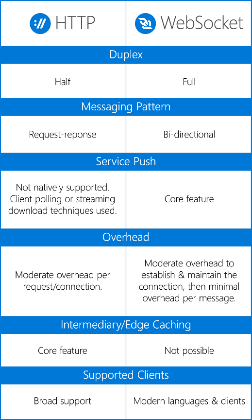

Título: WebSockets
Es una alternativa a la comunicación mediante el protocolo HTTP, ofreciendo un canal de comunicación bidireccional y duradero entre cliente y servidor. Una vez establecido, el canal se mantiene abierto ofreciendo una conexión bastante rápida con baja latencia y sobrecarga.

Está diseñada para ser implementada en navegadores y servidores web, pero puede utilizarse por cualquier aplicación cliente/servidor. Es ideal para aplicaciones que requieren conexiones en tiempo real como juegos multijugador, aplicaciones IoT y de chat..
Diferencia entre WebSockets y HTTP

HTTP es un protocolo que permite un tipo de comunicación basada en solicitudes y respuestas, es decir que el servidor devuelve información cuando el cliente la solicita.
Es ideal para intercambio ocasional de información e interacciones que deban ser inicializadas por el cliente.
Es más simple de implementar que WebSockets.
Por otro lado, con WebSockets el servidor puede enviar un mensaje al cliente sin necesidad de que el mismo haya solicitado algo.
El cliente y el servidor pueden comunicarse simultáneamente para lo cual no existe mucha sobrecarga de datos, esto se traduce en una comunicación de baja latencia.
Es la mejor opción para comunicaciones en tiempo real de larga duración.
Tipos de WebSockets
El cliente envía una petición de negociación WebSocket y el servidor envía una respuesta de negociación WebSocket.
En ambos lados se genera un token aleatorio que finalmente se une en una cadena MD5 única para confirmar que la petición ha sido leída correctamente.
En este aspecto es similar a HTTP, sin embargo, una vez negociada la petición se activa el modo full-duplex.En el caso de Android Studio, existen diversas librerías para implementar WebSockets con ayuda de Java.
La elección de uno u otro dependerá de las necesidades del desarrollador. Entre las distintas librerías se encuentran las siguientes:
| Librería | Descripción |
|---|---|
|
TooTallNate/ Java-WebSocket |
Implementación básica de servidor y cliente escrita 100% en Java. Tiene muchos problemas relacionados a conexiones SSL. |
|
koush/ AndroidAsync |
Basado en NIO, es decir de un solo hilo y devolución de llamada. Cliente HTTP + servidor y cliente + servidor WebSocket. |
|
codebutler/ android-websockets |
Un cliente WebSocket muy simple y mínimo para Android. Permite que el dispositivo Android tenga una conexión TCP a Internet sin bloqueo de activación. |
|
Atmosphere/ wasync |
WebSocket con biblioteca cliente de transporte de reserva para Node.js, Android y Java. |
|
TakahikoKawasaki/ nv-websocket-client |
Implementación de cliente WebSocket de alta calidad en Java. |
|
square/ okhttp |
Cliente HTTP + SPDY para aplicaciones Android y Java. Tiene un módulo Websocket integrado desde la versión 3.5. |
|
firebase/ TubeSock |
Cliente de WebSocket implementada en Java |
|
Autobahn| Android (GitHub) |
Biblioteca de redes de código abierto para Java / Android. Implementa el Protocolo WebSocket y el Protocolo de mensajería de aplicaciones web (WAMP). No tiene soporte para wss. |
Implementación nativa para Android :
También existe una librería cliente nativa para Android llamada; nkzawa / socket.io-client.java. Para implementarla se debe agregar como una dependencia en build.gradle de la siguiente manera:
A continuación, se debe inicializar el socket mediante Java con el siguiente código:
Para analizar y componer cadenas JSON, agregar el siguiente código:
Las opciones se suministran de la siguiente manera:
Se puede proporcionar parámetros de consulta con la opción “query” de la siguiente manera:
Para obtener una devolución de llamada “Ack” cuando el servidor recibió un mensaje:
Y viceversa:
Para configurar SSL: